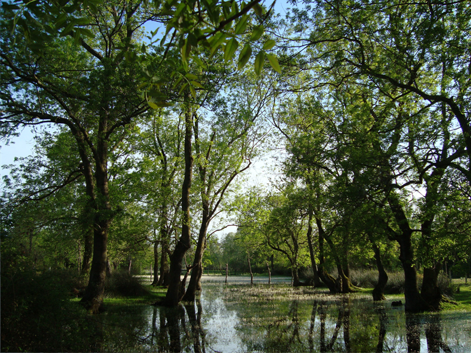
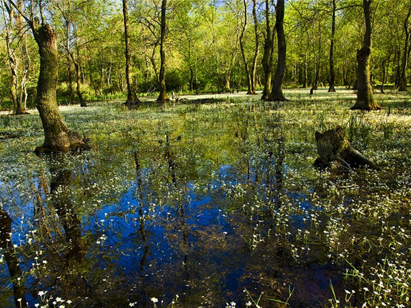

Su Basan Ormanları

19 Mayıs ilçesinde Kızılırmak deltası mevkiinde yaban hayatı açısından ülkemizin en ilginç ve
nadir subasar ormanlarından biridir. Çoğunluğu dışbudak ağacından oluşan ormanın ilkbaharda
tabanı tamamen suyla kaplanır ve suyun üstü ağaçların yapraklarıyla örtülür. Bu muhteşem ormanın
görülmesi açısından en güzel zaman ilkbahardır. Ormanda ayrıca kuş gözlemciliği yapılmaktadır.
